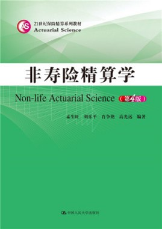

非寿险精算学
<<<<<<< HEAD2022-05-16
=======2022-07-04
>>>>>>> devChapter 1 课程简介
这是对外经济贸易大学和西南财经大学开设《非寿险精算学》等课程的讲义， 其中使用了其它教材的例子和讲法， 仅供学生内部使用， 不作为公开出版。 鉴于本人水平有限， 错漏之处难免，欢迎指出错误或提出改进意见。
编写人员：
李政宵（对外经济贸易大学保险学院副教授）
杨亮（西南财经大学金融学院副教授）
刘坤（对外经济贸易大学 2020 级硕士生）
刘雅薇（对外经济贸易大学 2020 级硕士生）
1.1 课程内容
本课程是一门三学分课程（精算与风险管理专业必修、其他专业选修），适合风险管理、保险与精算等相关专业的本科高年级学生参考。
非寿险精算主要内容是风险模型、费率厘定和准备金评估。
- 风险模型：风险度量、索赔次数模型、索赔金额模型、累积损失模型
- 费率厘定：分类费率厘定、经验费率厘定
- 准备金评估：未到期责任准备金、未决赔款准备金、理赔费用准备金评估
在教学过程中中，以 R 语言 为编程工具，同时提供了详细的程序代码，方便读者再现完整的编程和计算过程。
1.2 先修内容
需要概率论与数理统计、高等数学、线性代数、保险学的基础知识
- 概率论与数理统计：随机变量、概率分布、中心极限定理
- 高等数学：微积分、泰勒公式
- 线性代数：矩阵运算
- 保险学：基本概念和专业术语
1.3 教材和参考资料
- Klugman S. A., Panjer H. H., Willmot G. E. Loss models: from data to decisions (5th edition). London: John Wiley & Sons, 2016

- 非寿险精算学（第4版），孟生旺、刘乐平、肖争艳、高光远，人民大学出版社，2019年

1.4 R 软件与 rmarkdown 可视化
1.4.1 Rmarkdown 简介
Rmarkdown 是 R 语言环境中提供的 markdown 编辑工具，运用 rmarkdown 撰写文章，既可以像一般的 markdown 编辑器一样编辑文本，也可以在 rmarkdown 中插入代码块，并将代码运行结果输出在 markdown 里。R Markdown 格式，简称为 Rmd 格式， 相应的源文件扩展名为.Rmd。输出格式可以是 HTML、docx、pdf、beamer 等。
对于专注于用 R 语言写报告的数据分析师来说，rmarkdown 既提高了数据分析工作的便捷性，也提高了数据分析报告的复用性。markdown 的教程以及对应的编辑器介绍可见：
R沟通｜markdown编辑器—Typora（可跳转） 这一期主要介绍 Rmarkdown。
增加R软件的介绍
增加markdown的介绍
增加rmarkdown的介绍、安装和使用说明，包括如何导出html和pdf格式，介绍一些简答的公式输入